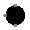

| Library: | Input/Output |
| Introduced: | 3.x.x |
| Appearance: |  |
Displays the value of its three inputs as one of eight possible colors.
A RGBLED has three pins, one representing red, one for green, and one for blue. When all inputs are 0, the LED appears black. WHen all are 1, the LED appears white. Otherwise the LED appears colored according to the RGB value of the three inputs.
When the component is selected or being added,
the arrow keys alter its Facing
attribute.
yes, then each RGBLED input is considered "On" when the input is 1, and "Off" otherwise. If
no, the input is "On" when the input is 0, and "Off" otherwise.
None.
Supports VHDL and Verilog synthesis, as if it were three separate LEDs (one for R, one for G, and one for B).